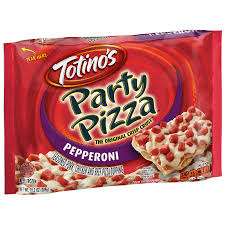

This recipe teaches you how to make a delicious pizza.
Now you might be thinking: wait a minute, that's a picture of a manufactured, processed pizza. A Totino's pizza, in fact.
And to that I say: yes it is.